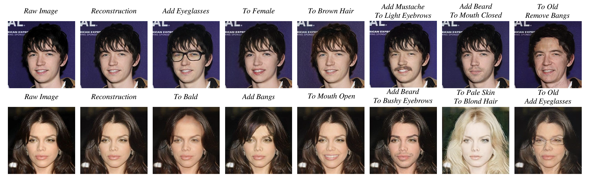
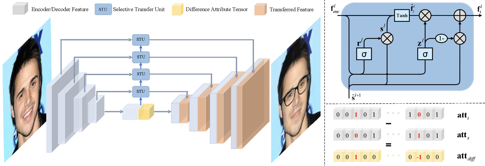
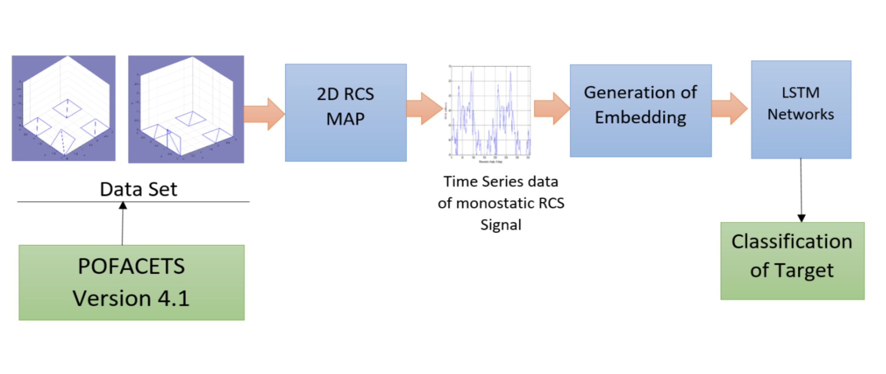

My fascination with Artificial Intelligence (AI) began in my sophomore year, a time when AI was just starting to gain widespread attention. My curiosity about this emerging field was piqued, leading me to explore what AI really entailed.
I am deeply grateful to Mr. Vignesh Kothappalli, my basketball teammate and one of the pioneers of IITG.ai – a community of AI enthusiasts at IIT Guwahati. Through IITG.ai and Prof. Andrew Ng's courses on Coursera, I took my first steps in Machine Learning.
At IIT Hyderabad, under the mentorship of Prof. Sumohana Channappayya, I dived into Generative Models. This experience rapidly advanced my understanding of Generative Adversarial Networks (GANs). During my internship, I engaged in several projects utilizing GANs, culminating in a victory at the Engineering the Eye Hackathon.
Post-internship, I continued participating in various projects with the IITG.ai community and embarked on personal projects. My journey led me to an internship at Samsung Research Institute Noida, in the multimedia department of the smartphone division. Here, my team and I developed a facial attribute editing app using STGAN – a groundbreaking technology at the time. The project's success earned us recognition as one of the best projects and a coveted pre-Placement Offer.
Further expanding my skillset, I delved into computer vision and the mathematical modeling of AI models. Prof. M K Bhuyan's classes immensely helped me grasp the intricacies of computer vision. Additionally, Prof. Tony Jacob's course on Pattern Recognition and Machine Learning and Prof. Hanumant Singh Shekhawat's course on Applied Mathematics profoundly expanded my understanding of AI and ML, offering deep insights into their mathematical foundations.
Below, I detail a couple of my significant projects:


The proposed model achieved a 20% accuracy gain over all contemporary models, leading to being awarded a Pre-Placement Offer (PPO) for exemplary demonstration of technical skills during the internship.
